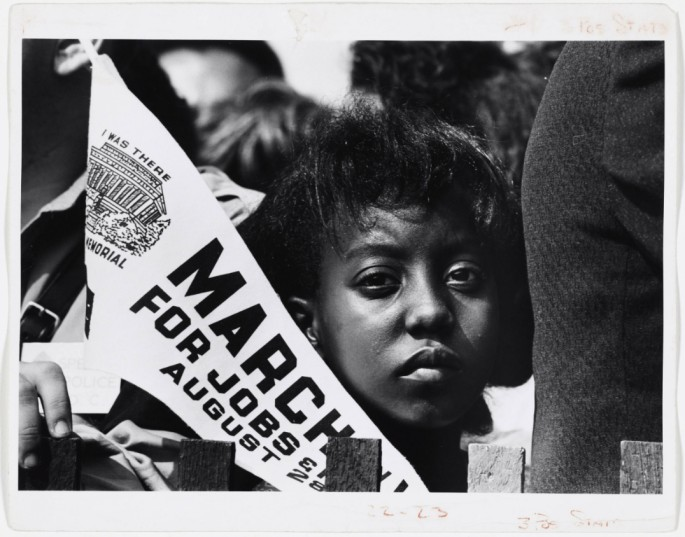

Directions: Fill in the chart as we study each stage of the year 1963. Keep this page in your notebook. You will use it again on the review day before the unit test, and it is the record the writing task argues from.

| Stage | Date | What happened | What it cost | Who it moved |
|---|---|---|---|---|
| Project C | ||||
| The Letter | ||||
| The children | ||||
| The address | ||||
| The march | ||||
| September 15 |
Pressure and its price in one paragraph. Read down your chart. Explain in your own words how Birmingham's pressure reached Washington by August, and what September 15 showed about the limits of that pressure. Use at least three rows of the chart, and name the four girls in your answer.
| Stage | Date | What happened | What it cost | Who it moved |
|---|---|---|---|---|
| Project C | Spring 1963 | The SCLC and Fred Shuttlesworth's local movement aimed sit-ins, marches, and a downtown boycott at segregated Birmingham under Commissioner Connor. | Hundreds of arrests, and a campaign that stalled by early May as bail money ran short. | At first, almost no one beyond Birmingham. The stall is part of the record. |
| The Letter | April 1963 | Arrested on Good Friday, King answered eight white clergymen from his cell, in paraphrase arguing that he was no outsider and that the white moderate was the deepest obstacle. | The days of his imprisonment, and an argument answered by no ordinance. | The national reading public and the clergy he answered. No vote in Washington directly. |
| The children | May 2 and 3, 1963 | Thousands of students marched from the 16th Street Baptist Church. More than nine hundred were arrested on May 2. On May 3 Connor used fire hoses and police dogs before television cameras. | Mass arrests of children, injuries, and the risk the movement debated before sending them. | Birmingham's business leaders, who settled within the week, and the Kennedy administration. |
| The address | June 11, 1963 | Kennedy addressed the nation, called civil rights a moral issue, and announced a comprehensive civil rights bill. Medgar Evers was assassinated in Jackson that night. | The southern wing of the president's party, and Evers his life. | The presidency itself, and the question's address: the bill went to Congress, where it stalled. |
| The march | August 28, 1963 | About 250,000 people came to the Lincoln Memorial for jobs and freedom. Rustin read the ten demands, and King closed the program with his address on the nation's unhonored promises. | A year of organizing, and a discipline that required reviewed speeches and softened lines. | The country's sense of the bill's support. The Senate's arithmetic did not change that summer. |
| September 15 | September 15, 1963 | Klansmen bombed the 16th Street Baptist Church at 10:22 in the morning, as it prepared for Youth Day. | Addie Mae Collins, Cynthia Wesley, and Carole Robertson, fourteen, and Carol Denise McNair, eleven, were killed. More than twenty others were injured. | National sympathy, again. The bill remained stalled at the year's end, and the first bombing conviction came in 1977. |
Pressure and its price in one paragraph. Strong answers trace the mechanism rather than retelling the year. Birmingham's pressure worked by stages: a local campaign created a crisis, the Letter gave the crisis its argument, the children gave it a national audience on television, and the president answered with an address and a bill, which the march then backed with a visible national constituency and ten named demands. September 15 showed the limit in two directions at once: violence against the movement continued at its worst, in the killing of Addie Mae Collins, Cynthia Wesley, Carole Robertson, and Carol Denise McNair, and the federal answer the pressure had produced, the bill, still sat unpassed in Congress. A paragraph earns full credit when it holds both halves, the pressure that worked and the law that had not yet come, without treating the bombing as a tactic or a step in anyone's plan.